Laporan ini mendokumentasikan kelanjutan Tugas 1 (perancangan basis data) dan Tugas 2 (analisis sistem) menjadi aplikasi web yang benar-benar berjalan, terhubung ke basis data PostgreSQL, diuji secara end-to-end, dan dipublikasikan pada URL publik.
| Persyaratan tugas | Bukti implementasi | Status |
|---|---|---|
| Basis data dari rancangan Tugas 1 | 7 tabel, 3 view, 1 trigger, constraint PK/FK/CHECK/UNIQUE pada PostgreSQL 18.7 | Terpenuhi |
| Antarmuka web yang dapat digunakan | 6 halaman operasional: dashboard, nasabah, jenis sampah, setoran, penarikan, laporan | Terpenuhi |
| Lima fitur relevan dengan bisnis | Dashboard analitik, manajemen nasabah, master harga, setoran multi-jenis, penarikan saldo tervalidasi | Terpenuhi |
| Pengujian sistem | 11 skenario black-box Playwright; 11 lulus, 0 gagal; hasil tersimpan pada tests/results.json | Terpenuhi |
| Akses publik | https://bank-sampah-digital-rust.vercel.app (HTTP 200, tanpa login) | Terpenuhi |
| Laporan dengan tangkapan layar | Dokumen ini, 12 gambar, tabel pengujian, dan bukti deployment | Terpenuhi |
Bank sampah mencatat aktivitas warga menyetorkan sampah, mengubah berat sampah menjadi saldo, lalu melayani penarikan saldo. Pencatatan manual rentan menimbulkan selisih nilai, kehilangan riwayat, dan kesalahan saldo. Pada Tugas 1 telah dirancang basis data relasional dengan tujuh tabel; pada Tugas 2 telah dianalisis kebutuhan dan alur bisnisnya. Tugas 3 menuntut rancangan tersebut menjadi sistem informasi berbasis web yang dapat diakses publik, diuji, dan didokumentasikan.
Implementasi mempertahankan keputusan desain penting dari Tugas 1, yaitu harga snapshot pada rincian setoran dan saldo yang dihitung dari selisih setoran dan penarikan. Dengan demikian, perubahan harga master tidak mengubah nilai transaksi lama, dan saldo selalu konsisten tanpa kolom saldo yang redundan.
| Kode | Fungsi | Perilaku yang diharapkan | Pengguna |
|---|---|---|---|
| F01 | Dashboard operasional | Menampilkan jumlah nasabah, berat sampah, nilai setoran, saldo tersimpan, tren enam bulan, komposisi kategori, nasabah teraktif, dan setoran terbaru. | Petugas / pengelola |
| F02 | Manajemen nasabah | Mencari, menambah, mengubah, dan menghapus nasabah; nomor HP unik; riwayat transaksi dan saldo tampil pada halaman detail. | Petugas administrasi |
| F03 | Master jenis sampah & harga | Mengelola kategori dan jenis sampah, mengubah harga per kilogram, serta menampilkan volume dan frekuensi pemakaian tiap jenis. | Pengelola master data |
| F04 | Setoran multi-jenis | Satu transaksi dapat berisi beberapa jenis sampah; subtotal dan total dihitung otomatis; harga disimpan sebagai snapshot. | Petugas penimbang |
| F05 | Penarikan saldo | Penarikan divalidasi terhadap saldo tersedia; nominal melebihi saldo ditolak dengan pesan jelas; saldo langsung diperbarui. | Petugas kasir |
| F06 | Laporan periodik | Merekap transaksi, berat, nilai, kategori, nasabah teraktif, dan kinerja petugas berdasarkan rentang tanggal. | Pengelola |
| F07 | Ekspor CSV | Mengunduh rincian setoran pada periode terpilih dalam berkas CSV yang dapat dibuka di Excel. | Pengelola |
| Aspek | Target dan cara pemenuhan |
|---|---|
| Akses publik | Aplikasi dapat dibuka tanpa login pada perangkat dan jaringan mana pun melalui URL Vercel; proteksi Vercel Authentication dinonaktifkan secara sengaja karena fokus tugas adalah alur bisnis. |
| Responsif | Tata letak menggunakan grid Tailwind dan menyesuaikan lebar layar; navigasi tetap dapat dipakai pada layar kecil. |
| Integritas data | Validasi di lapisan server, transaksi BEGIN/COMMIT/ROLLBACK, foreign key, constraint CHECK, indeks unik, dan trigger saldo. |
| Kinerja | Query agregasi langsung di PostgreSQL, connection pool yang dipakai ulang, indeks pada kolom tanggal dan foreign key, serta halaman laporan yang tidak memuat data berlebihan. |
| Keamanan dasar | Query parameterized ($1, $2, ...) untuk mencegah SQL injection; kredensial hanya berada pada environment variable, tidak ditulis di kode atau laporan. |
| Portabilitas | Seluruh skema dan data awal dapat dibangun ulang dengan satu perintah npm run db:init. |
Aplikasi memakai arsitektur tiga lapis. Browser hanya menerima HTML, CSS, dan JavaScript yang sudah dirender; logika bisnis berjalan di server Next.js pada Vercel; data disimpan pada PostgreSQL di Neon. Koneksi database menggunakan connection pool dan hanya dibuka dari sisi server sehingga kredensial tidak pernah dikirim ke browser.
| Lapisan | Teknologi / versi | Alasan pemilihan |
|---|---|---|
| Antarmuka | Next.js 16.4.6, React 19.3.1, TypeScript 7.0.2, Tailwind CSS 4.3.5 | Server Components mengurangi JavaScript klien, App Router mempermudah pemisahan halaman, dan Tailwind mempercepat pembuatan antarmuka konsisten. |
| Logika server | Next.js Server Actions, Node.js 26.x | Form dapat mengirim mutasi tanpa membuat API terpisah; validasi tetap berjalan di server dan tidak dapat dilewati dari browser. |
| Akses database | pg 8.23.1, SQL mentah | SQL eksplisit memperlihatkan penerapan DDL, join, agregasi, view, dan transaksi; tanpa ORM agar sesuai tujuan mata kuliah basis data. |
| Basis data | PostgreSQL 18.7 di Neon (region sin1) | Open source, mendukung constraint, view, trigger PL/pgSQL, serta cocok untuk serverless karena koneksi pooled. |
| Hosting | Vercel (production) | Deployment langsung dari CLI, TLS otomatis, URL publik, dan integrasi environment variable dengan Neon. |
| Pengujian | Playwright 1.65.1 (Chromium) | Menguji alur nyata dari sisi pengguna pada aplikasi produksi, termasuk validasi dan unduhan CSV. |
src/lib/queries.ts, yang menjalankan SQL parameterized ke PostgreSQL, lalu merender HTML.revalidatePath membersihkan cache halaman terkait dan pengguna diarahkan ke halaman bukti atau pesan sukses.| Keputusan | Dampak |
|---|---|
| SQL mentah, tanpa ORM | Struktur tabel, relasi, view, dan trigger terlihat langsung; query agregasi laporan dapat ditulis sesuai kebutuhan. |
| Harga diambil ulang di server | Harga dari browser tidak dipercaya. Server membaca jenis_sampah.harga_per_kg lalu menyimpannya ke detail_setoran.harga_satuan sebagai snapshot. |
| Saldo sebagai view | v_saldo_nasabah menghitung total setoran dikurangi total penarikan, sehingga tidak ada saldo ganda yang perlu disinkronkan. |
| Trigger sebagai pengaman terakhir | Meskipun aplikasi memiliki bug atau ada klien lain, database tetap menolak penarikan yang melebihi saldo. |
| DATE dibaca sebagai string | Parser tipe 1082 dikustomisasi agar tanggal tidak bergeser akibat perbedaan zona waktu server (UTC) dan pengguna (WIB). |
Rancangan Tugas 1 dipindahkan ke PostgreSQL tanpa mengurangi relasi. Tujuh tabel tetap terdiri atas empat tabel master dan tiga tabel transaksi. Nama tabel, primary key, dan foreign key dipertahankan agar laporan Tugas 1 dan implementasi Tugas 3 dapat dibaca sebagai satu kesatuan.
| Tabel | Primary key | Foreign key | Atribut penting |
|---|---|---|---|
| kategori_sampah | id_kategori | — | nama_kategori (unik), deskripsi |
| jenis_sampah | id_jenis | id_kategori → kategori_sampah | nama_jenis (unik), harga_per_kg ≥ 0 |
| nasabah | id_nasabah | — | nama, alamat, no_hp (unik), tgl_daftar |
| petugas | id_petugas | — | nama_petugas, jabatan, no_hp (unik) |
| setoran | id_setoran | id_nasabah, id_petugas | tgl_setoran, catatan |
| detail_setoran | id_detail | id_setoran, id_jenis | berat_kg > 0, harga_satuan > 0 (snapshot) |
| penarikan_saldo | id_penarikan | id_nasabah, id_petugas | tgl_penarikan, jumlah > 0 |
| MySQL (Tugas 1) | PostgreSQL (implementasi) | Keterangan |
|---|---|---|
INT AUTO_INCREMENT | INTEGER GENERATED BY DEFAULT AS IDENTITY | Primary key sekaligus memungkinkan pemuatan ID eksplisit dari seed. |
DECIMAL(10,2) | NUMERIC(10,2) | Nilai uang dan berat disimpan tepat, tanpa pembulatan floating point. |
VARCHAR(n) | VARCHAR(n) | Tetap sama; panjang disesuaikan dengan validasi aplikasi. |
DATE | DATE | Tanggal transaksi tidak memerlukan komponen waktu. |
ON DELETE RESTRICT | ON DELETE RESTRICT | Mencegah penghapusan data master yang masih dipakai transaksi. |
| Trigger saldo (MySQL) | Fungsi PL/pgSQL + BEFORE INSERT trigger | Aturan bisnis yang sama, ditulis ulang sesuai dialek PostgreSQL. |
| View rekap | 3 view PostgreSQL | v_saldo_nasabah, v_rekap_kategori, v_riwayat_setoran. |
Berikut bagian skema yang paling menentukan integritas data. Seluruh definisi lengkap berada pada db/schema.sql.
| Aturan | Mekanisme | Perilaku saat dilanggar |
|---|---|---|
| Nomor HP nasabah unik | UNIQUE(no_hp) + pemeriksaan kode 23505 | Sistem menampilkan pesan bahwa nomor HP sudah terdaftar. |
| Berat dan harga positif | CHECK (berat_kg > 0), CHECK (harga_satuan > 0) | Baris ditolak database; aplikasi juga menolak input tidak wajar lebih awal. |
| Setoran harus milik nasabah dan petugas valid | Foreign key RESTRICT | Data referensi tidak dapat dihapus selama masih dipakai. |
| Rincian ikut terhapus bersama setoran | ON DELETE CASCADE pada detail_setoran | Tidak ada rincian yatim tanpa header. |
| Penarikan tidak melebihi saldo | Validasi server + FOR UPDATE + trigger BEFORE INSERT | Transaksi dibatalkan dengan pesan saldo tidak mencukupi. |
| Harga transaksi lama tidak berubah | Kolom harga_satuan pada detail | Perubahan harga master hanya berlaku untuk transaksi berikutnya. |
| Riwayat transaksi tidak hilang | Foreign key RESTRICT pada nasabah | Nasabah dengan riwayat tidak dapat dihapus; kode PostgreSQL 23001 dan 23503 ditangani. |
| View | Isi dan pemanfaatan |
|---|---|
v_saldo_nasabah | Total setoran, total penarikan, dan saldo setiap nasabah. Dipakai pada daftar nasabah, halaman detail, form penarikan, serta laporan. |
v_rekap_kategori | Total berat dan nilai per kategori. Menjadi dasar komposisi kategori pada dashboard dan rekap laporan. |
v_riwayat_setoran | Gabungan header setoran, nasabah, petugas, kategori, jenis, berat, harga snapshot, dan subtotal. Dipakai untuk riwayat rinci dan ekspor CSV. |
Data awal berasal dari Tugas 1 sebanyak 52 baris. Setelah pengujian end-to-end, ditambahkan satu nasabah (Rina Wulandari), satu setoran baru, dua baris detail, dan satu penarikan sah. Kondisi akhir basis data produksi adalah sebagai berikut.
| Tabel | Baris awal | Baris akhir | Keterangan |
|---|---|---|---|
| kategori_sampah | 5 | 5 | Plastik, Kertas, Logam, Kaca, Elektronik |
| jenis_sampah | 8 | 8 | Harga Botol PET diperbarui menjadi Rp 3.750 |
| nasabah | 6 | 7 | Ditambah Rina Wulandari |
| petugas | 5 | 5 | Hendra, Lilis, Taufik, Mega, Joko |
| setoran | 8 | 9 | Setoran #009 tanggal 19 November 2026 |
| detail_setoran | 15 | 17 | Kardus 3 kg dan Botol PET 2 kg |
| penarikan_saldo | 5 | 6 | Penarikan sah Rp 5.000 |
| Total | 52 | 57 | Selisih 5 baris berasal dari pengujian |
| Item | Nilai |
|---|---|
| Penyedia | Neon Serverless Postgres melalui Vercel Marketplace |
| Nama database | neondb, pemilik neondb_owner |
| Versi server | PostgreSQL 18.7 (aarch64, Linux) |
| Region | sin1 (Asia Pacific, Singapore) |
| Koneksi aplikasi | DATABASE_URL — koneksi pooled untuk runtime Vercel |
| Koneksi administrasi | DATABASE_URL_UNPOOLED — dipakai db:init untuk DDL |
| Objek database | 7 tabel, 3 view, 1 fungsi trigger, 1 trigger, 3 indeks eksplisit |
.env.local hanya untuk keperluan pengembangan lokal.Dashboard tidak mengambil seluruh baris lalu menghitung di JavaScript. Perhitungan dilakukan oleh PostgreSQL dalam satu permintaan, sehingga jumlah data yang dikirim ke aplikasi tetap kecil. Query berikut menghasilkan empat indikator utama yang tampil pada kartu dashboard.
Untuk laporan periodik, filter tanggal diterapkan pada header setoran sebelum rincian diagregasi. Pendekatan ini memanfaatkan indeks idx_setoran_tgl dan memastikan transaksi di luar periode tidak ikut terhitung.
Antarmuka memakai sidebar hijau tua yang konsisten pada seluruh halaman, area isi berwarna putih dengan latar hijau muda, dan kartu-kartu statistik. Warna hijau dipilih karena berkaitan dengan daur ulang, dengan aksen limau untuk menu aktif. Setiap halaman memiliki judul, penjelasan singkat, aksi utama, dan umpan balik setelah operasi berhasil atau gagal.
Navigasi terdiri atas enam menu: Dashboard, Nasabah, Jenis Sampah, Setoran, Penarikan, dan Laporan. Identitas pengguna serta versi aplikasi ditampilkan di bagian bawah sidebar.
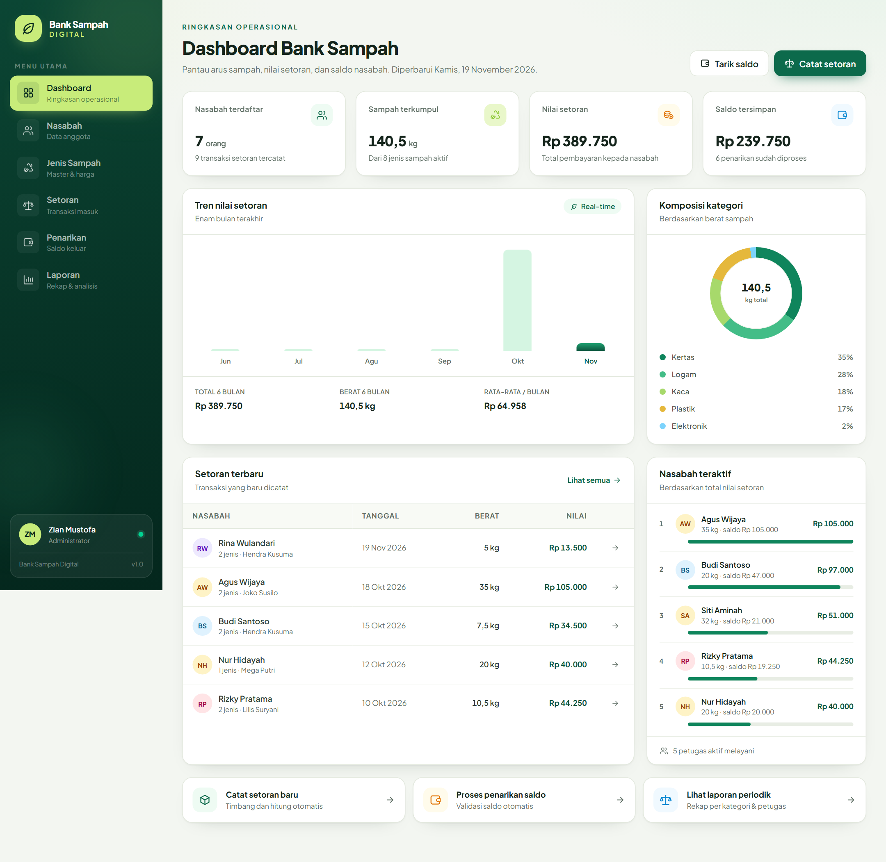
Dashboard adalah halaman pertama yang dilihat pengelola. Empat kartu utama menampilkan nasabah terdaftar, berat sampah terkumpul, nilai setoran, dan saldo tersimpan. Nilai tersebut dihitung langsung dari tabel dan view, sehingga selalu mengikuti transaksi terbaru. Grafik tren memakai agregasi enam bulan terakhir; komposisi kategori memakai v_rekap_kategori; daftar nasabah teraktif diurutkan berdasarkan total nilai setoran.
Pada kondisi akhir, dashboard menampilkan 7 nasabah, 140,5 kg sampah, Rp 389.750 nilai setoran, dan Rp 239.750 saldo tersimpan. Tombol pintas di bagian bawah mengarahkan pengguna ke pencatatan setoran, penarikan saldo, dan laporan periodik.
Halaman nasabah menggabungkan pencarian, daftar, form pendaftaran, dan ringkasan saldo. Pencarian memeriksa nama, nomor HP, dan alamat menggunakan ILIKE, sehingga petugas dapat menemukan nasabah tanpa menghafal ID. Setiap baris menampilkan jumlah setoran dan saldo terkini dari v_saldo_nasabah.
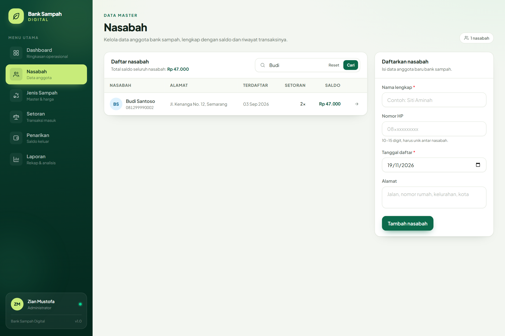
Form pendaftaran memvalidasi nama minimal tiga karakter, nomor HP 10–15 digit, dan tanggal daftar. Nomor HP diperiksa unik di database. Setelah berhasil, pengguna diarahkan ke halaman detail nasabah yang menampilkan total setoran, total penarikan, saldo, serta riwayat gabungan setoran dan penarikan.
| Field | Aturan validasi | Perilaku saat tidak valid |
|---|---|---|
| Nama lengkap | Wajib, 3–100 karakter | Pesan kesalahan tampil; data tidak dikirim ke database. |
| Nomor HP | 10–15 digit, unik antar-nasabah | Duplikat ditolak oleh UNIQUE(no_hp) dan diterjemahkan menjadi pesan ramah. |
| Tanggal daftar | Format YYYY-MM-DD yang valid | Form menolak tanggal kosong atau tidak valid. |
| Alamat | Opsional, maksimal 200 karakter | Input berlebih ditolak sebelum query dijalankan. |
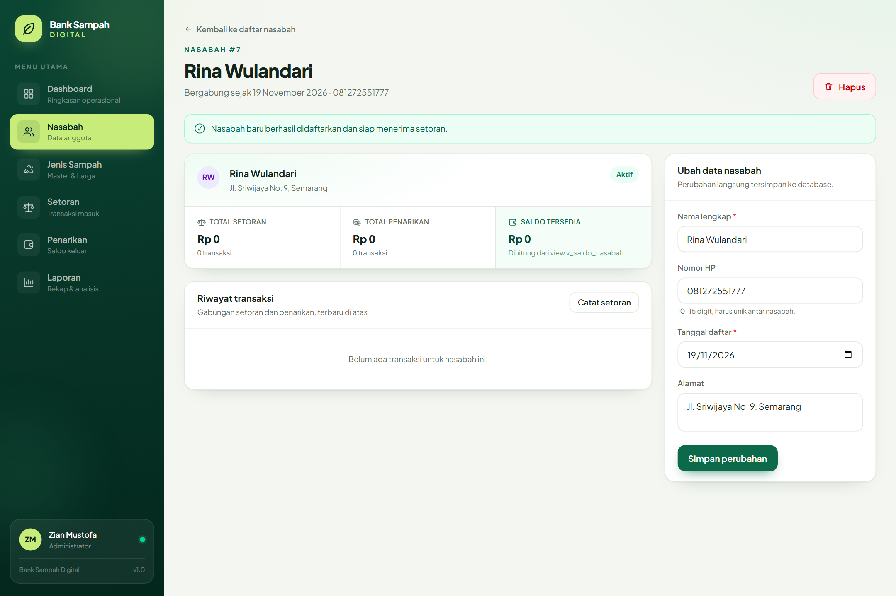
Validasi duplikasi tidak hanya mengandalkan pesan aplikasi. Constraint UNIQUE(no_hp) tetap menjadi pengaman terakhir. Ketika nomor HP yang sudah dipakai dicoba didaftarkan kembali, kode kesalahan PostgreSQL 23505 diterjemahkan menjadi pesan yang mudah dipahami pengguna.
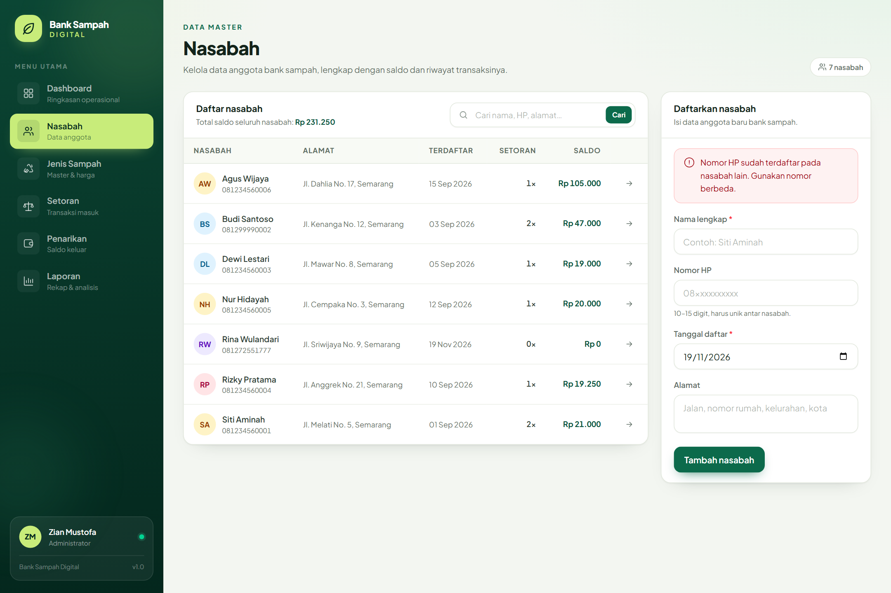
Halaman jenis sampah mengelola dua tingkat data: kategori dan jenis. Setiap jenis menampilkan kategori, frekuensi pemakaian, total volume, dan harga per kilogram. Harga dapat diubah langsung pada kolom input lalu disimpan. Perubahan harga master tidak menyentuh harga_satuan pada detail transaksi lama.
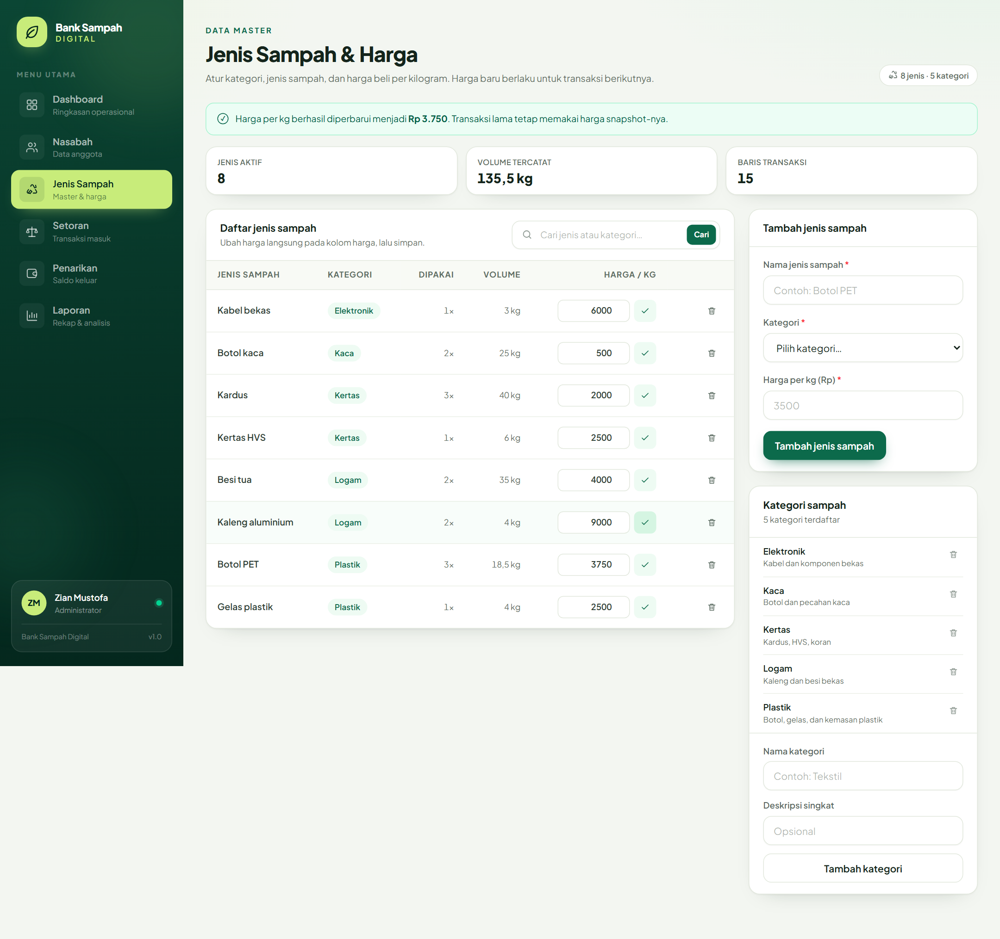
Pada pengujian, harga Botol PET diubah dari Rp 3.700 menjadi Rp 3.750. Setoran #001 yang dibuat sebelum perubahan tetap bernilai Rp 3.500 per kg. Sebaliknya, setoran #009 yang dibuat setelah perubahan memakai Rp 3.750. Ini membuktikan bahwa histori keuangan tidak berubah ketika master harga diperbarui.
Form setoran memungkinkan satu transaksi berisi hingga 20 baris jenis sampah. Pengguna memilih nasabah, petugas, tanggal, dan catatan; setiap baris berisi jenis sampah dan berat. Subtotal dihitung otomatis di browser untuk kenyamanan, tetapi server menghitung ulang seluruh nilai sebelum menyimpan.
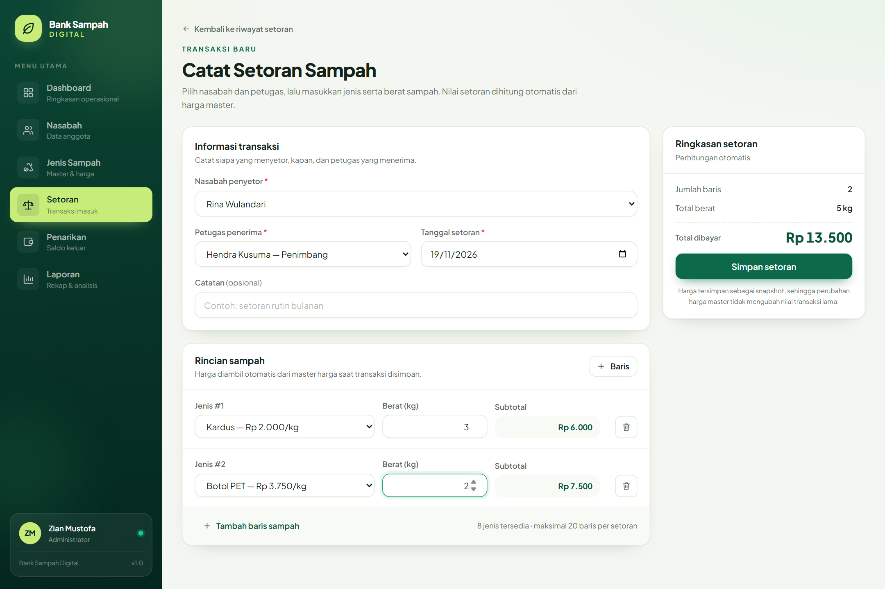
Server Action mengambil harga terbaru dari tabel jenis_sampah, membulatkan berat dua desimal, lalu menulis header dan detail dalam satu transaksi. Jika salah satu baris gagal, seluruh transaksi di-rollback sehingga tidak ada setoran setengah jadi. Setelah berhasil, halaman detail menampilkan bukti setoran yang dapat dicetak.
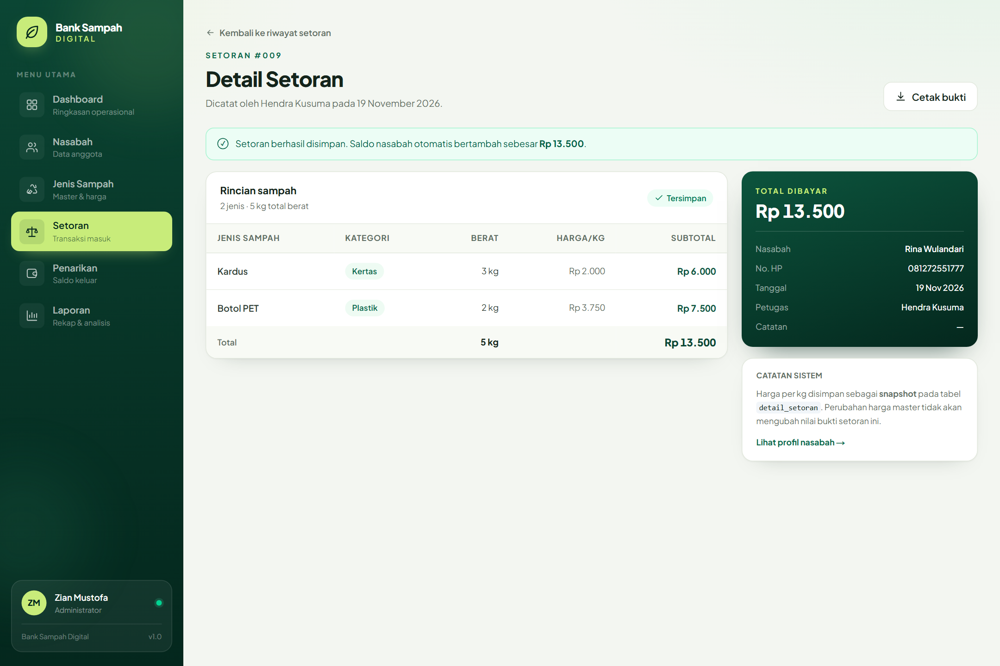
Penarikan saldo adalah transaksi paling sensitif karena mengurangi kewajiban bank sampah kepada nasabah. Implementasi memakai dua lapis pertahanan. Lapis pertama berada di Server Action: saldo dibaca dari v_saldo_nasabah, nominal dibandingkan, lalu baris nasabah dikunci dengan SELECT ... FOR UPDATE agar dua permintaan bersamaan tidak lolos bersama. Lapis kedua berada di database: trigger trg_penarikan_cek_saldo menghitung ulang saldo dan menolak nominal yang melebihi saldo.
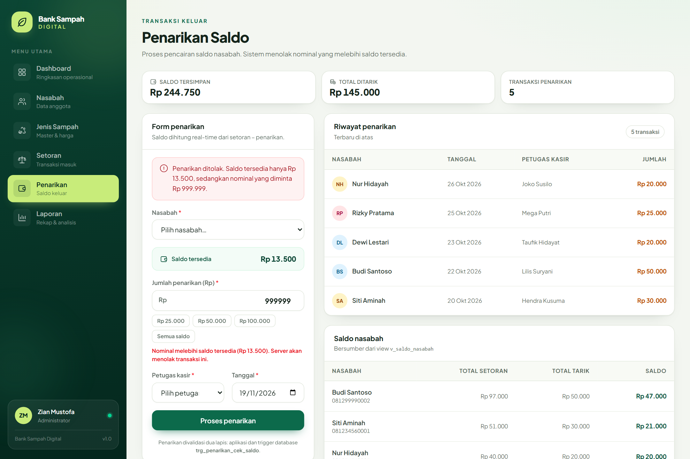
Setelah penolakan, saldo tidak berubah dan tidak ada baris pada penarikan_saldo. Pengujian kemudian dilanjutkan dengan penarikan sah Rp 5.000. Saldo berubah dari Rp 13.500 menjadi Rp 8.500, daftar penarikan bertambah, dan total penarikan berubah dari Rp 145.000 menjadi Rp 150.000.
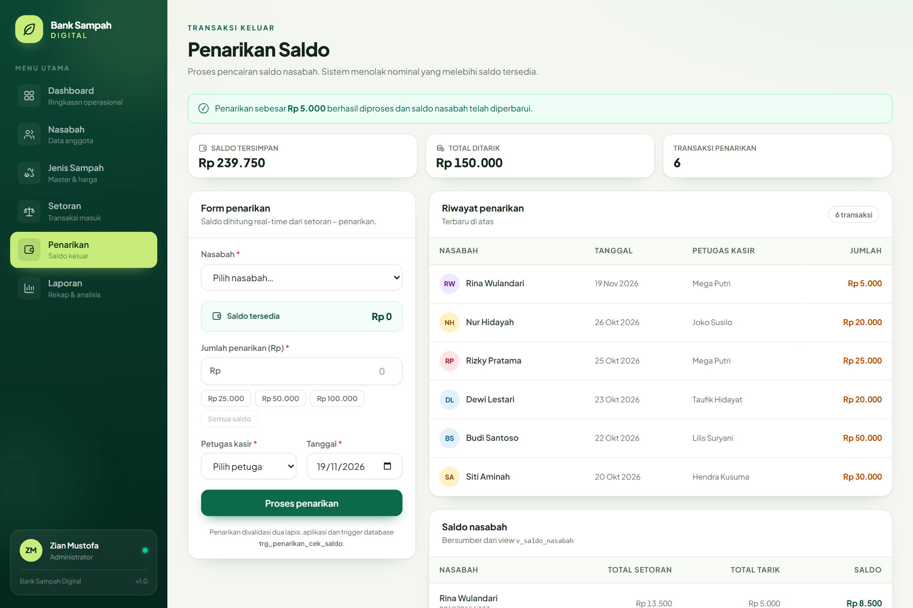
Nasabah yang sudah memiliki setoran atau penarikan tidak boleh dihapus. Foreign key RESTRICT menolak operasi tersebut; aplikasi menangkap kode 23503 (foreign key violation) dan 23001 (restrict violation) lalu menampilkan pesan yang menjelaskan alasannya. Dengan demikian, riwayat keuangan tidak dapat hilang karena penghapusan data master.
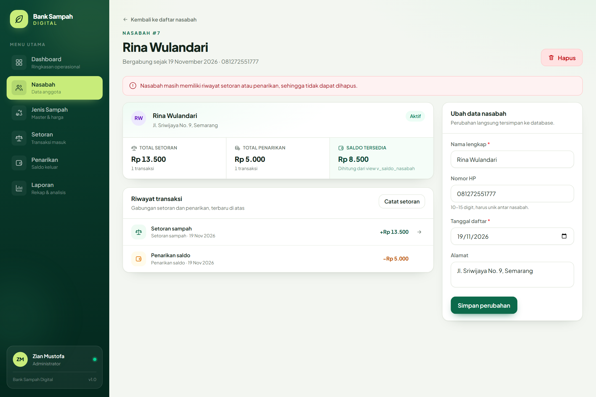
Halaman laporan merangkum data berdasarkan rentang tanggal. Pengguna dapat memilih tanggal awal dan akhir, lalu melihat jumlah transaksi, berat, nilai setoran, penarikan, rekap per kategori, nasabah teraktif, kinerja petugas, dan daftar transaksi. Tombol “Unduh CSV” menghasilkan berkas dengan pemisah titik koma dan BOM UTF-8 agar karakter Indonesia tampil benar di Excel.
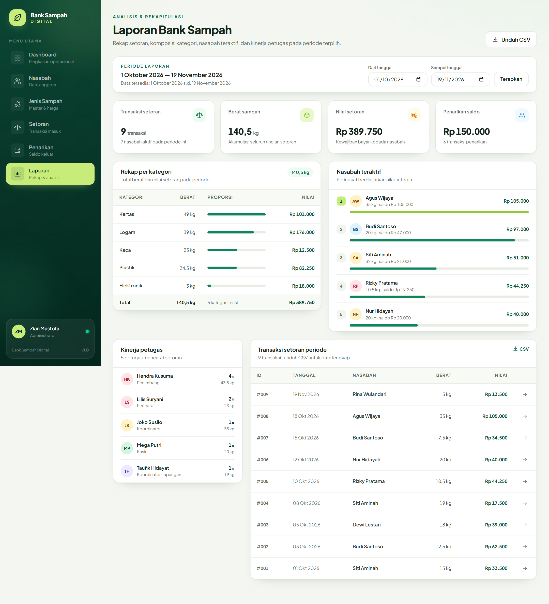
Berkas CSV yang diunduh pada pengujian berukuran 1,4 KB dan memuat seluruh baris rincian, termasuk transaksi terbaru. Lima baris terakhir berkas tersebut adalah:
dd MMM yyyy berbahasa Indonesia.Pengujian dilakukan dengan pendekatan black-box end-to-end menggunakan Playwright dan browser Chromium. Penguji hanya berinteraksi melalui antarmuka, tanpa memanggil fungsi internal. Seluruh skenario dijalankan terhadap aplikasi produksi, bukan server lokal, sehingga sekaligus memverifikasi koneksi database, environment variable, dan hasil deployment.
| Item | Keterangan |
|---|---|
| Target pengujian | https://bank-sampah-digital-rust.vercel.app |
| Waktu eksekusi | 19 November 2026, 14.16 WIB (2026-11-19T07:16:53Z) |
| Browser | Chromium melalui Playwright 1.65.1, viewport 1440 × 960, skala perangkat 1,5 |
| Lokalisasi | id-ID, zona waktu Asia/Jakarta |
| Jumlah skenario | 11 skenario (T01–T11) |
| Data uji | Data Tugas 1 ditambah Rina Wulandari, setoran multi-jenis, dan penarikan sah/tidak sah |
| Berkas hasil | tests/e2e.mjs dan tests/results.json |
| ID | Skenario | Input / langkah | Hasil yang diharapkan | Hasil aktual | Status |
|---|---|---|---|---|---|
| T01 | Dashboard menampilkan ringkasan operasional | Buka halaman utama aplikasi | Empat kartu KPI tampil dan tidak ada pesan error | Dashboard tampil dengan 4 KPI, grafik tren, dan komposisi kategori | Lulus |
| T02 | Pencarian nasabah | Kata kunci “Budi” | Daftar hanya menampilkan nasabah yang cocok | Pencarian “Budi” menampilkan tepat 1 baris (Budi Santoso) | Lulus |
| T03 | Menambah nasabah baru | Nama Rina Wulandari, HP 081272551777, alamat Semarang | Nasabah tersimpan, halaman detail terbuka, saldo awal Rp 0 | Nasabah #7 tersimpan dan halaman detail menampilkan saldo Rp 0 | Lulus |
| T04 | Validasi nomor HP ganda | Tambah nasabah dengan HP 081299990002 (milik Budi) | Sistem menolak dan menampilkan pesan nomor HP sudah terdaftar | Pesan “Nomor HP sudah terdaftar pada nasabah lain” ditampilkan | Lulus |
| T05 | Ubah harga master & snapshot harga lama | Harga Botol PET diubah dari Rp 3.700 menjadi Rp 3.750 | Harga master berubah, tetapi detail setoran lama tetap Rp 3.500 | Master menjadi Rp 3.750; snapshot setoran #001 tetap Rp 3.500 | Lulus |
| T06 | Mencatat setoran multi-jenis | Kardus 3 kg + Botol PET 2 kg untuk Rina Wulandari | Total otomatis Rp 13.500 dan transaksi tersimpan | Setoran #9 tersimpan dengan total Rp 13.500 | Lulus |
| T07 | Penarikan melebihi saldo ditolak | Tarik Rp 999.999 dari saldo Rp 13.500 | Transaksi ditolak dengan pesan saldo tidak mencukupi | Penarikan ditolak, pesan menyebutkan saldo tersedia Rp 13.500 | Lulus |
| T08 | Penarikan saldo valid | Tarik Rp 5.000 dari saldo Rp 13.500 | Transaksi berhasil dan saldo tersisa Rp 8.500 | Penarikan Rp 5.000 berhasil; saldo nasabah menjadi Rp 8.500 | Lulus |
| T09 | Hapus nasabah dengan riwayat transaksi | Klik Hapus pada nasabah Rina Wulandari | Penghapusan ditolak karena melanggar foreign key | Penghapusan ditolak oleh integritas referensial (FK RESTRICT) | Lulus |
| T10 | Laporan periodik & ekspor CSV | Buka laporan periode seluruh data | Rekap kategori, nasabah teraktif, kinerja petugas tampil; CSV berisi data | Laporan tampil lengkap; CSV 1,4 KB berhasil diunduh | Lulus |
| T11 | Health check koneksi database | GET /api/health | Status ok dan database connected | Database terhubung; 7 nasabah, 9 setoran | Lulus |
Seluruh skenario berstatus LULUS. Total durasi eksekusi sekitar 61,7 detik dengan rata-rata 5,6 detik per skenario, termasuk waktu tunggu jaringan dan cold start koneksi database. Berkas hasil lengkap tersimpan pada tests/results.json dan menjadi dasar tabel di atas.
| Skenario | Bukti | Gambar |
|---|---|---|
| T01 | Dashboard dengan KPI dan grafik | Gambar 1 |
| T02 | Pencarian “Budi” menghasilkan satu baris | Gambar 2 |
| T03 | Halaman detail nasabah baru dan saldo Rp 0 | Gambar 3 |
| T04 | Pesan validasi nomor HP ganda | Gambar 4 |
| T05 | Harga master berubah dan pesan snapshot | Gambar 5 |
| T06 | Form setoran dan detail setoran #009 | Gambar 6–7 |
| T07 | Penarikan Rp 999.999 ditolak | Gambar 8 |
| T08 | Penarikan Rp 5.000 berhasil, saldo Rp 8.500 | Gambar 9 |
| T09 | Penghapusan nasabah ditolak | Gambar 10 |
| T10 | Laporan periodik dan CSV | Gambar 11 |
| T11 | Respons endpoint health | Gambar 12 |
Endpoint /api/health menjalankan empat query hitung ke database. Respons berikut diambil langsung dari server produksi pada 20 November 2026 pukul 17.22 WIB.
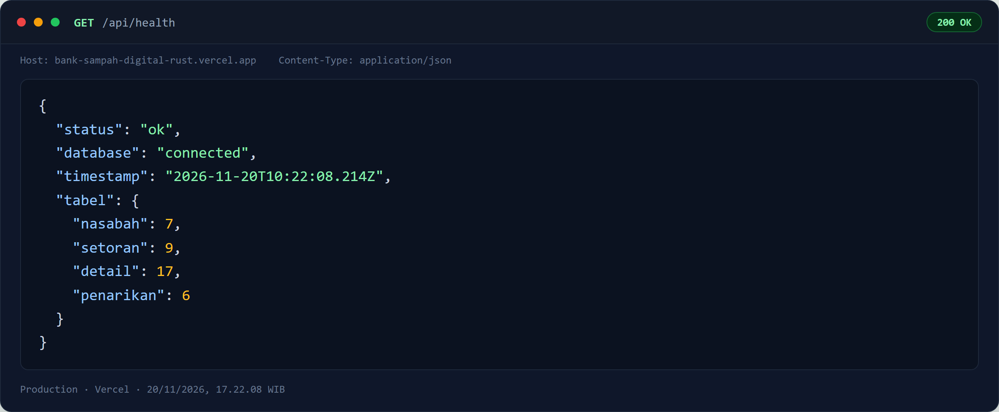
/api/health dari server produksi, ditampilkan dalam format yang mudah dibaca.| No | Masalah yang ditemukan | Penyebab | Perbaikan |
|---|---|---|---|
| 1 | Build gagal karena kelas .btn tidak dikenali | Tailwind CSS 4 tidak mengizinkan @apply pada kelas biasa di luar layer utilitas | Kelas kustom dideklarasikan dengan @utility btn |
| 2 | Harga Rp 3.750 dan nominal Rp 999.999 tidak dapat dikirim | Atribut step pada input terlalu besar sehingga validasi HTML5 menolak nilai | step harga diubah menjadi 50 dan nominal penarikan menjadi 1 |
| 3 | Penghapusan nasabah beriwayat menghasilkan galat mentah | PostgreSQL mengembalikan kode 23001 (restrict violation), bukan hanya 23503 | Kedua kode ditangani dan diterjemahkan menjadi pesan yang ramah |
| 4 | Tanggal dapat bergeser satu hari | Kolom DATE dibaca sebagai objek waktu lalu dikonversi antar zona waktu | Parser tipe 1082 mengembalikan string YYYY-MM-DD apa adanya |
Pengujian dijalankan setelah basis data dibangun ulang dari schema.sql dan seed.sql, sehingga hasil tidak dipengaruhi sisa data percobaan sebelumnya. Data uji sengaja dibiarkan pada basis data produksi agar angka pada laporan, tangkapan layar, CSV, dan endpoint health konsisten. Dengan demikian, pembaca dapat mencocokkan setiap angka pada dokumen ini dengan data yang benar-benar tersimpan.
https://bank-sampah-digital-rust.vercel.app| Item | Keterangan |
|---|---|
| Platform hosting | Vercel, lingkungan Production |
| Nama proyek | bank-sampah-digital (akun zianmustofaa-5934) |
| Framework | Next.js 16.4.6, Node.js 26.x |
| Domain produksi | bank-sampah-digital-rust.vercel.app |
| Deployment ID | dpl_FTNEriK3BZsVC2LECLiTqkjnkHVp |
| Waktu deploy | 19 November 2026, 14.14 WIB |
| Durasi build | 30 detik (mesin 2 vCPU, 8 GB RAM) |
| Status | Ready / Production |
| Proteksi akses | Vercel Authentication dinonaktifkan agar URL dapat diakses publik |
| Nama | Lingkungan | Fungsi |
|---|---|---|
DATABASE_URL | Production, Preview, Development | Connection string pooled yang dipakai aplikasi saat melayani permintaan. |
DATABASE_URL_UNPOOLED | Development / operasional | Koneksi langsung untuk menjalankan DDL dan seed melalui npm run db:init. |
Kedua nilai berasal dari integrasi Neon melalui Vercel Marketplace. Nilai aktual tidak dimuat dalam laporan. Untuk pengembangan lokal, nilai disalin dengan vercel env pull .env.local.
db/schema.sql serta data ke db/seed.sql.npm run db:init untuk membuat tujuh tabel, tiga view, trigger, dan 52 baris data awal.npm run build secara lokal untuk memastikan tidak ada kesalahan TypeScript atau Tailwind./api/health, menjalankan 11 skenario Playwright terhadap URL produksi, dan menyimpan hasilnya.Respons 200 tanpa header WWW-Authenticate menunjukkan halaman dapat dibuka tanpa autentikasi. Halaman yang sama juga diuji melalui browser Playwright pada seluruh skenario, sehingga bukan hanya endpoint health yang dapat diakses.
attachDatabasePool membantu menutup koneksi dengan rapi saat instance Vercel di-suspend.Implementasi Tugas 3 menunjukkan bahwa rancangan basis data tidak berhenti sebagai diagram dan skrip SQL. Dengan menghubungkan tujuh tabel ke antarmuka web, menerapkan aturan integritas pada lapisan aplikasi dan database, menguji alur nyata, serta mempublikasikan aplikasi, sistem Bank Sampah Digital dapat digunakan untuk mencatat setoran, menghitung saldo, melayani penarikan, dan menghasilkan laporan secara konsisten. Hasil ini menjadi dasar yang kuat untuk pengembangan lanjutan menuju sistem operasional yang aman dan siap dipakai banyak pengguna.
npm run db:init menghapus lalu membuat ulang seluruh tabel. Jangan jalankan perintah ini pada database yang sudah berisi data nyata tanpa backup.| Berkas | Fungsi |
|---|---|
db/schema.sql | DDL tujuh tabel, tiga view, trigger perlindungan saldo, dan indeks. |
db/seed.sql | 52 baris data awal yang identik dengan hasil Tugas 1. |
scripts/db-init.mjs | Menjalankan schema dan seed, lalu menampilkan jumlah baris tiap tabel. |
src/lib/db.ts | Connection pool, query parameterized, dan helper transaksi. |
src/lib/queries.ts | Seluruh query baca untuk dashboard, master, transaksi, dan laporan. |
src/app/setoran/actions.ts | Validasi dan penyimpanan setoran multi-jenis dalam satu transaksi. |
src/app/penarikan/actions.ts | Validasi saldo, penguncian baris, dan penyimpanan penarikan. |
src/app/nasabah/actions.ts | CRUD nasabah, penanganan nomor HP ganda, dan perlindungan penghapusan. |
src/app/api/health/route.ts | Health check koneksi dan jumlah baris tabel. |
src/app/api/laporan/csv/route.ts | Ekspor rincian setoran ke CSV. |
tests/e2e.mjs | Sebelas skenario Playwright dan pengambilan tangkapan layar. |
tests/results.json | Hasil pengujian produksi: 11 lulus, 0 gagal, 61,7 detik. |
laporan-tugas3/assets/ | Dua belas tangkapan layar yang dipakai pada laporan ini. |
laporan-tugas3/export-laporan.csv | Berkas CSV hasil unduhan dari aplikasi produksi. |
| Indikator | Nilai |
|---|---|
| Jumlah tabel / view / trigger | 7 / 3 / 1 |
| Data awal / data akhir | 52 baris / 57 baris |
| Nasabah / setoran / penarikan | 7 / 9 / 6 |
| Total berat sampah | 140,5 kg |
| Total nilai setoran | Rp 389.750 |
| Total penarikan | Rp 150.000 |
| Saldo tersimpan | Rp 239.750 |
| Skenario pengujian | 11 lulus, 0 gagal |
| Durasi pengujian | 61,7 detik |
| Durasi build produksi | 30 detik |
| URL publik | https://bank-sampah-digital-rust.vercel.app |
— Akhir Laporan Tugas 3 —
Zian Mustofa · TIF 3A · 25080960002 · Tahun Akademik 2026/2027